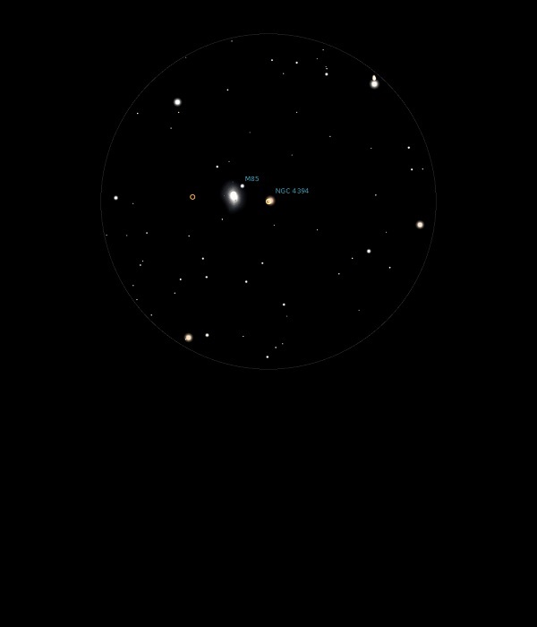

NGC 4394
Galaxy in Coma Berenices
NGC 4394
Mag 10.9
03/05/13
In same
12mm FOV as M85, fuzzy but distinct
19/04/15
Close to M85 and in the same very sparse starfield, this Mag
10.9 Galaxy is eay to spot, and in fact in a 12mm FOV is only
one of three objects really, with M85 and a Mag 10.55 star!